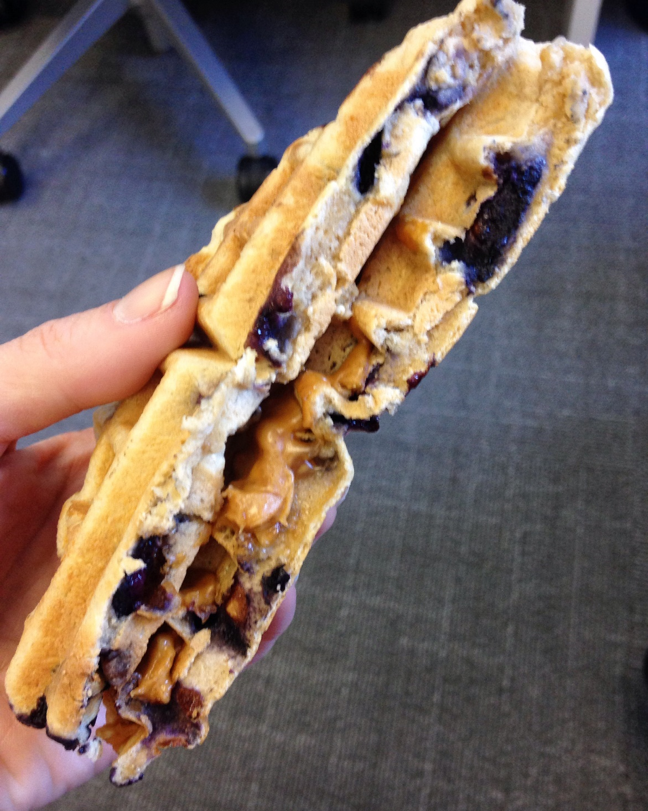

Protein Waffle Breakfast Sandwich - Recipe!
OK guys, I officially caved and made the Kodiak Cakes purchase. Holy moly these things are fantastic! Of course, they're not exactly leggo-my-eggo status, but considering its many nutritional benefits, we'll forgive the taste being only a tad bit bland.
I wanted to start mixing up my meals during the week. I am very much what they like to call a "routine eater." When something either a) tastes good, b) is nutritious, and c) saves me calories, I'll usually stick to those core picks. For a while it was strictly yogurt for breakfast, salad for lunch, whatever Mom made me for dinner. We're going to continue with the latter option for now though because hey, I only get mom's home-cooked meals on the regular for the next year before I start making my own (eek).
Switching up the menu is also part of my "food is fuel, not the enemy" mindset. I've been in recovery for about one and a half years now, and though I've seen a massive improvement in regards to the shape of my body and becoming more of a flexible dieter, so to speak, my mindset still needs a lot of work.
It's time to make up my own mind, and make my own decisions on food because truth be told, I teeter on the edge of recovery and relapse every single day, but there is a strong knowledge lingering in the back of my mind that food will not hurt me unless I give it the power to do so. Will there be an issue if I eat ten donuts in one day? Yes. But is there also an issue if eating one donut becomes the focal point of my day? Yes.

I need to find the middle ground, and make myself comfortable there. You can have a donut and not regret it. You can have a donut and not punish yourself
for it. I am so tired of punishing myself for it.
Step 1: Incorporate more carbs (slowly, but surely, this will no longer be an issue). Why? Well, to get over my fear of them, for one. But also because
they are just yummy and there are ways around scary carbs.
Three out of the five days during a typical work week, I eat yogurt and granola at 9am, and it keeps me full for about two hours. Eventually, typing on
an empty stomach becomes a struggle. Writers block ensues, and you begin to dream about snacks on snacks. This is bad news bears as I have been
known to mindlessly pick at food, and the BP office is full of goodies for the staff to share. Ergo, I've experimented with the Kodiak Cakes
to create a well-balanced breakfast that is both delicious, nutritious, and filling.
| What | Calories | P | C | F |
|---|---|---|---|---|
| 1/2 cup of Kodiak Cakes mix | 190 | 14g | 30g | 2g |
| 1 TBSP Jif Chunky PB | 95 | 3.5g | 4g | 8g |
| Total: | 285 calories | 17.5g | 34g | 10g |
Follow the directions on the box to whip up your Kodiak Waffle. Unless you're seeking additional protein, all you need to do is add water! (I throw blueberries into the batter if I'm feeling fancy, and you could also get fancy with chocolate chips, coconut shavings, etc. Make it your own!)
Once the waffle has been cooked, cut it in half and spread one tablespoon of peanut butter to one half. If I can expect my work out to be a little more demanding (usually on days I'm doing Crush lifting), I'll add half a banana over the peanut butter once it's a little melted, and top it off with the other half. This is guaranteed to keep you full for at least three hours, so it's great for work, and easily portable in a ziplock baggie!
Try these out and let me know what you think!
Got a recipe for me? I'm starting to put together my first cookbook for married life! Suggestions and tips are welcome :)